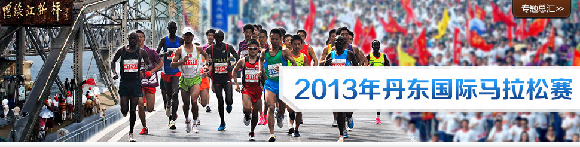
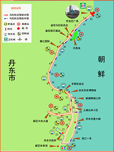

丹东国际马拉松介绍

所在城市：辽宁省丹东
竞赛类型：M全程马拉松
赛事时间：2013-05-26
各位马拉松运动员大家好：
由于在去年的马拉松比赛过后，有许多参赛选手提议，想把比赛最后阶段冲刺的本人图片设
计为自己的成绩证书图片背景，并注明本次比赛的总成绩排名。今年组委会考虑大家的要求，我
们在比赛当天结束后正常打印成绩证书的前提下，针对有此项要求的参赛选手，我们将于比赛结
束后半个月左右把带有本人冲刺背景的成绩证书，通过邮政快递的方式递送到参赛选手手中，具
体详情请咨询组委会。
竞赛类型：M全程马拉松
赛事时间：2013-05-26
各位马拉松运动员大家好：
由于在去年的马拉松比赛过后，有许多参赛选手提议，想把比赛最后阶段冲刺的本人图片设
计为自己的成绩证书图片背景，并注明本次比赛的总成绩排名。今年组委会考虑大家的要求，我
们在比赛当天结束后正常打印成绩证书的前提下，针对有此项要求的参赛选手，我们将于比赛结
束后半个月左右把带有本人冲刺背景的成绩证书，通过邮政快递的方式递送到参赛选手手中，具
体详情请咨询组委会。
赛事新闻
- 2013丹东港鸭绿江马拉松5月26日鸣枪
今年的马拉松大赛将于本月25日早8：00在市合作区文化广场开赛。我市已连续七年成功举办马拉松大赛，马拉松大赛深受百姓欢迎，被百姓誉为“体育大过年” - 2013丹东港鸭绿江国际马拉松赛筹备就绪
2013丹东港鸭绿江国际马拉松赛将于5月26日（星期日）隆重举行。截止目前，各项筹备工作已基本就绪。为了本次马拉松赛的圆满成功
赛记精华
- 丹马 夫妻三度齐上阵 by: 阿贵
第四届马拉松赛于5月31日早6点50分鸣枪。据悉，丹东 鸭绿江国际马拉松赛已经国家体育总局田径管理中心批准，并纳入到国家级赛事。本届将有7300余名选手参加三个级别的比赛。
丹东市已成功举办了三届马拉松比赛，并在国内外产生积极影响，经过国家体育总局田径管理中心和中国路跑协会来丹实地考察 - 2012年5月27日丹东马拉松by: durian
天津到丹东有直达火车,真是太方便了.车上碰到了好几个跑友也都是准备赶往丹东的,到达丹东是5月27号早上7点左右,没有晚点真是万幸.因为事先和组委会联系好了,所以组委会还派车来火车站接我们,到达起点参赛包就给送了过来,组委会真是贴心.
换好衣服前往起点,发现很多棒子.应该是南方的棒子,北方的棒子饭都吃不饱 - 2011年丹东马拉松健康快乐完赛+1950年随想 by: 卢怀谦
2011年丹东马拉松健康快乐完赛，不抽筋，不中暑，第二天没有任何肌肉酸痛症状。
27日晚，与老庄、蓝天两位老兄在北京站汇合，上了K27列车，到天津站时无极上了车，大家畅谈至深夜，第二天早上到达丹东，感觉比北京要凉爽很多。下车后兵分两路，老庄、无极去组委会领号码，我和蓝天去虎山长城 - 2010年丹东鸭绿江马拉松by: hth_1969
周五下午登上k17次列车，次日一早即到丹东，我们入住组委会提供的宾馆长城招待所（一所部队系列对外旅馆）看来他们很会经营，按照组委会的牌价，我们入住分别上涨了10元、5元一位，而且房子长期空置无人住发出霉气，当然也于当地潮湿有关，总之，人生地不熟只好先住下再说，放下行李就直接去领比赛物品，我们走到设在体育局5楼的办公室，由于人少很快就办完事，在街上随便吃